Structure I, 2026

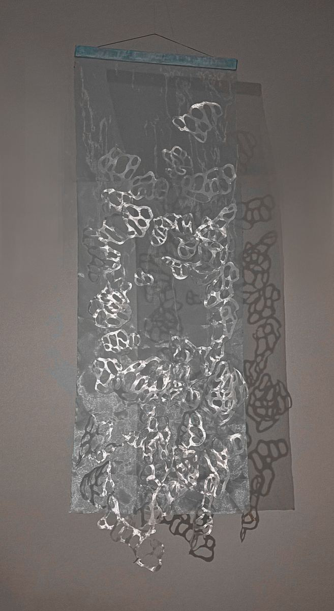
Structure I is about background anxiety: a quiet, constant tension that arises not from chaos but from an excess of structure. A multitude of forms, distributed across the cloth without centre or hierarchy, keeps the eye in continuous motion — every possibility is present at once, and none offers a foothold; the unfastened lower edge extends this field downward, never letting it come to rest. Under directed light the forms cast shadows, doubling their presence — traces of alternative scenarios that could have existed but remain only shadows.
Read more
The work registers background anxiety — a quiet, constant tension that arises not from chaos but from an excess of structure: an environment with too many possible directions, none of which guarantees a foothold.
The organza panel is fastened only along its upper edge; the lower part remains free and continues the space downward, never letting the field come to rest. Support here is never final: the material does not fix in place — just as the state of someone forced to adapt continually never settles.
A multitude of abstract forms is distributed across the surface without a stable centre. They intersect, gathering into clusters and voids; the eye moves among them but finds no point of final fixation. Their multiplicity produces the sense of all possibilities being present at once — and of the impossibility of realising them all.
The organza works as a semi-transparent medium: everything within it stays visible yet unfixable. Under directed light the forms cast shadows, doubling their presence — traces of alternative scenarios that could have existed but remain only shadows. The surrounding space enters the work: the anxiety is not confined to the surface but spreads into the space around it.
The anxiety here is not dramatic. It is quiet and constant.
Details
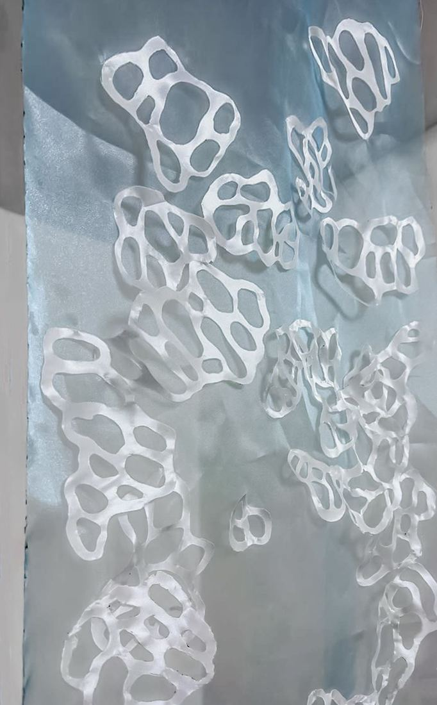
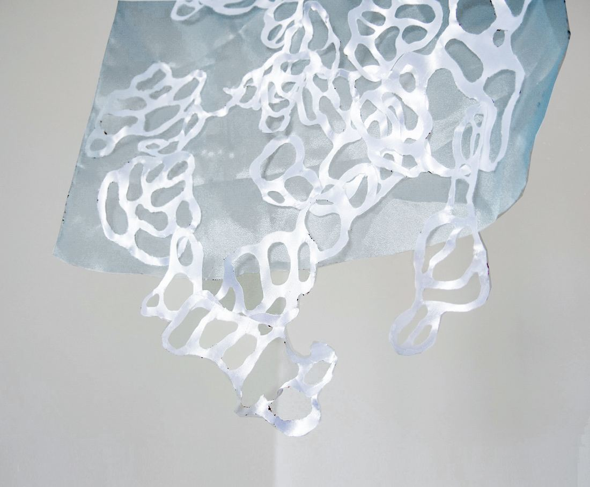
Structure II, 2026
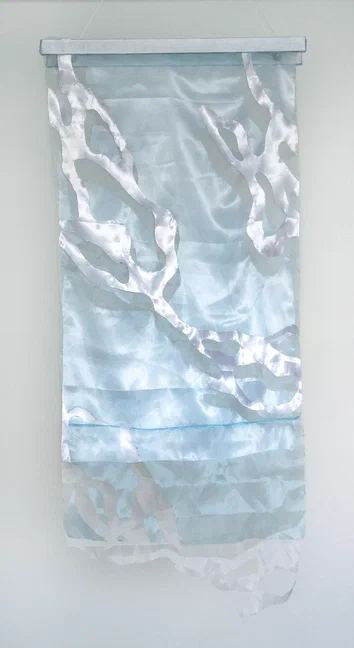
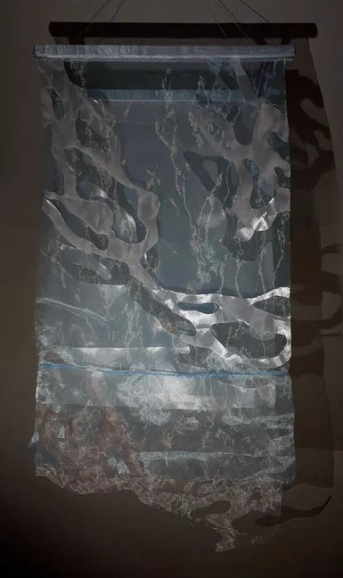
Structure II shifts attention from the pressure of the environment to an inner splitting — ambivalence, in which freedom ceases to be a multiplicity of possibilities and becomes the impossibility of wholeness. A form cut from one layer of fabric reappears in another as a displaced fragment or a void — a remainder, an echo; fine threads hold the layers in tense equilibrium, joining and separating them at once. The space between the layers is a state of "in-between": a zone where the contradiction is not resolved but reproduced again and again.
Read more
The work explores ambivalence — a state of inner splitting in which the conflict occurs not between a person and their external environment but within the subject itself: freedom ceases to be a multiplicity of possibilities and becomes the impossibility of wholeness.
Anxiety and ambivalence form a closed cycle: anxiety breeds division and the impossibility of a final choice, while the deferred decision in turn sustains the anxiety. The way out is endlessly postponed — and it is on this that the cycle holds.
This mechanism is translated into a structure of several semi-transparent layers. A form cut from one layer reappears in another as a displaced fragment or a void — a remainder, an echo, a repetition; fine threads hold the surfaces in tense equilibrium, joining and separating them at once, never letting the layers fully coincide. The layers are suspended from two slats set apart in depth: the space between the surfaces is not an image but a physical gap.
In the lower part of the composition, horizontal boundaries and fragments of forms return again and again — the cycle is not resolved but reproduced.
The work captures the moment when the search for stability turns into a continuous oscillation between alternatives, and the space between them becomes the only possible state.
Details
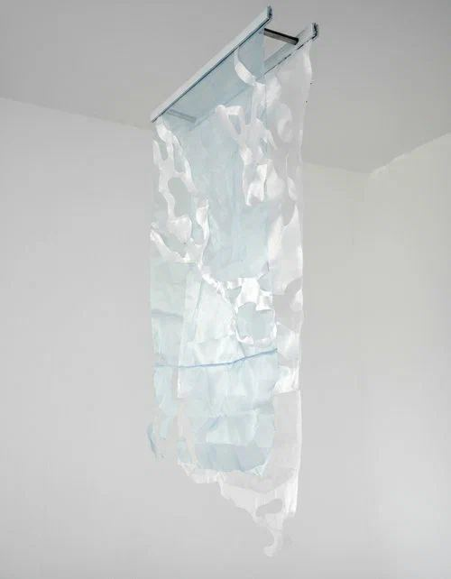
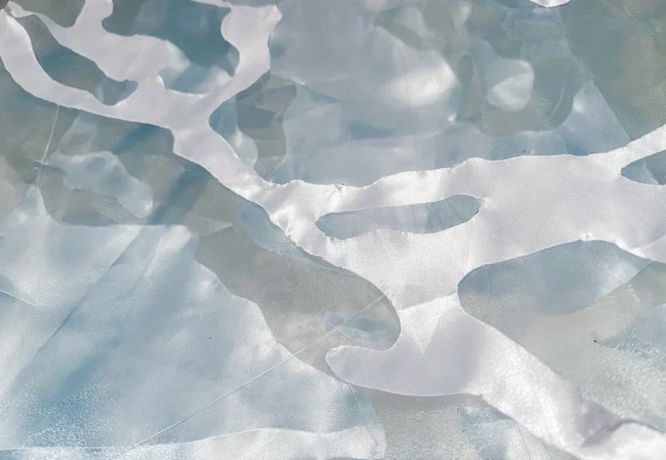
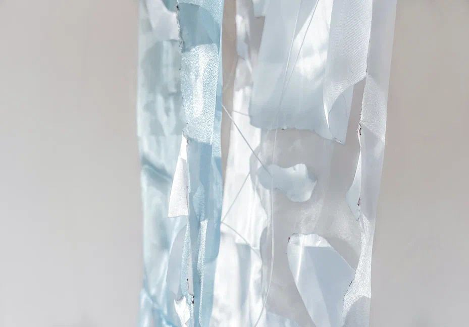
Structure III, 2026
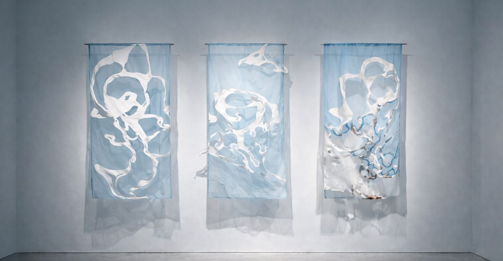
Digital visualisation of installation view — the work is physically realised; installation photography is in progress.
Structure III closes the series with a triptych: a single form repeats across three panels, gradually diverging from itself — it shifts between the layers, moves beyond the edge of the panel and can no longer be gathered into a whole. Each part is its own stage in the form's collision with its support: the form still holds; the form breaks off past the edge of the panel — the choice made does not fit within the given frame; the ground itself stops withstanding the tension. The work does not depict anxiety — it reproduces its conditions: the form searches for stability, the material guarantees no fixation, coincidence is never final.
Read more
Structure III is the closing work of the series: an interweaving of contradictory states that can be neither fully separated nor reduced to a whole.
One and the same form repeats across three panels, gradually diverging from itself. It shifts between the layers, breaks into fragments, partly moves beyond the edge of the panel — the image cannot be restored as a single whole. Depending on the viewer's position and the light, the work changes continually, never coming to a final fixation.
The three parts are arranged as stages of a single collision. In the first, the form still holds, yet no longer fully submits to its support. In the second, the form breaks off past the edge of the panel and fails to coincide with its trace on the layer behind — the choice made does not fit within the given frame. In the third, the ground itself is deformed: the structure can no longer withstand the tension. Each stage is fixed irreversibly — cutting and displacement leave marks in the fabric that cannot be undone: the triptych shows not three variants but a path along which there is no return.
The work does not depict anxiety — it reproduces its conditions: the form searches for stability, the material guarantees no fixation, the space is not neutral. The series closes not on rest but on an attempt to find a form of rest within a system that makes no provision for it.
Structure: Enclosure, 2026

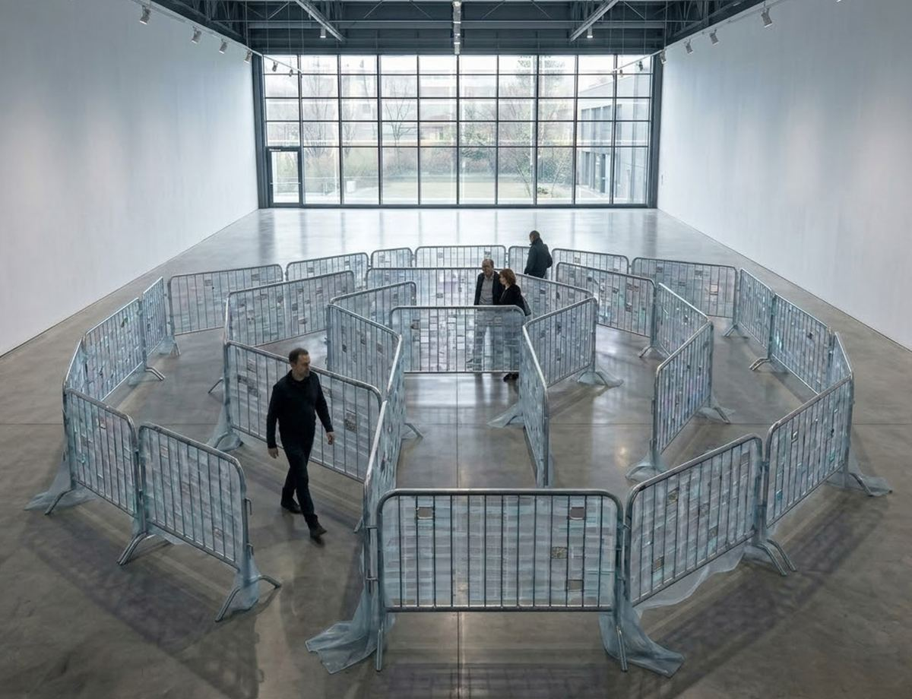
Project, digital visualisation — not yet physically realised.
Structure: Enclosure is a labyrinth built from real crowd-control barriers — the metal fences used in the street to mark where a person may and may not go. The barriers are waist-height: nothing physically prevents stepping over them, yet the viewer follows the given path, inside a structure so familiar that it is no longer noticed. Semi-transparent organza is woven through the metal grid; at the edges of the barriers the fabric runs off the metal and lies on the floor. In some cells the fabric is cut out and the melted edge sealed — what was cut away is not present in the installation; what remains in the cell is the exact contour of what is gone. At one point a choice appears — continue the loop or leave it — but leaving is made harder than obeying.
Read more
Structure: Enclosure is a labyrinth assembled from real crowd-control barriers — the metal fences used in the street to mark where a person may and may not go. Taken as readymades that have already served in systems of control, they form a low, looping corridor. The barriers are waist-height: nothing physically prevents stepping over them — and yet a person follows the given path, inside a structure so familiar that it is no longer noticed.
Semi-transparent organza is woven through the metal grid of the barriers; at the edges it runs off the metal and lies on the floor. In some cells the fabric is cut out and the melted edge sealed: what was cut away is not present in the installation, and what remains in the cell is the exact contour of what is gone.
The viewer does not look at the work from outside but moves inside it. At one point a choice appears: continue the loop or leave it — but leaving is made harder than obeying. The work proposes no resolution: to adapt is to survive, but to grow into someone else's frame; not to fit is to be erased. The contradiction is held, unresolved.
What is cut away is one form of vanishing among others — echoing, too, the algorithmic invisibility of those who fall out of step with the system.
Structure: After the Shift, 2026
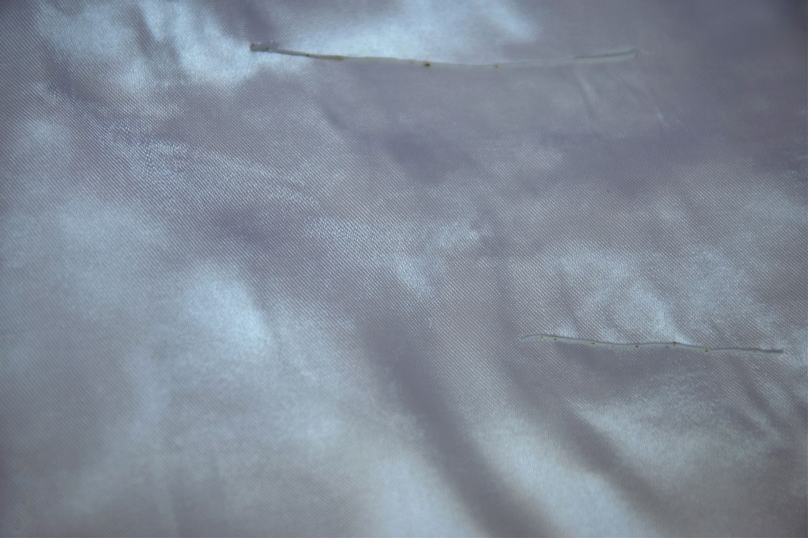
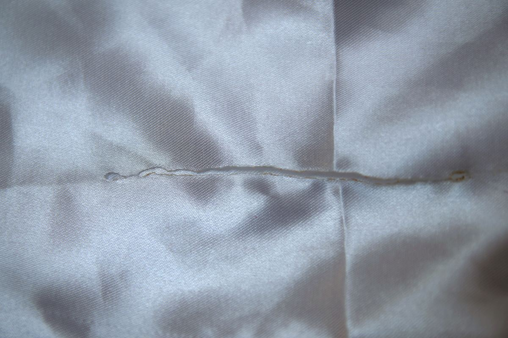
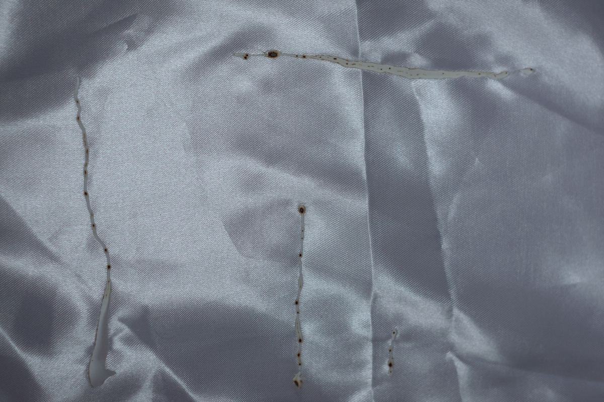
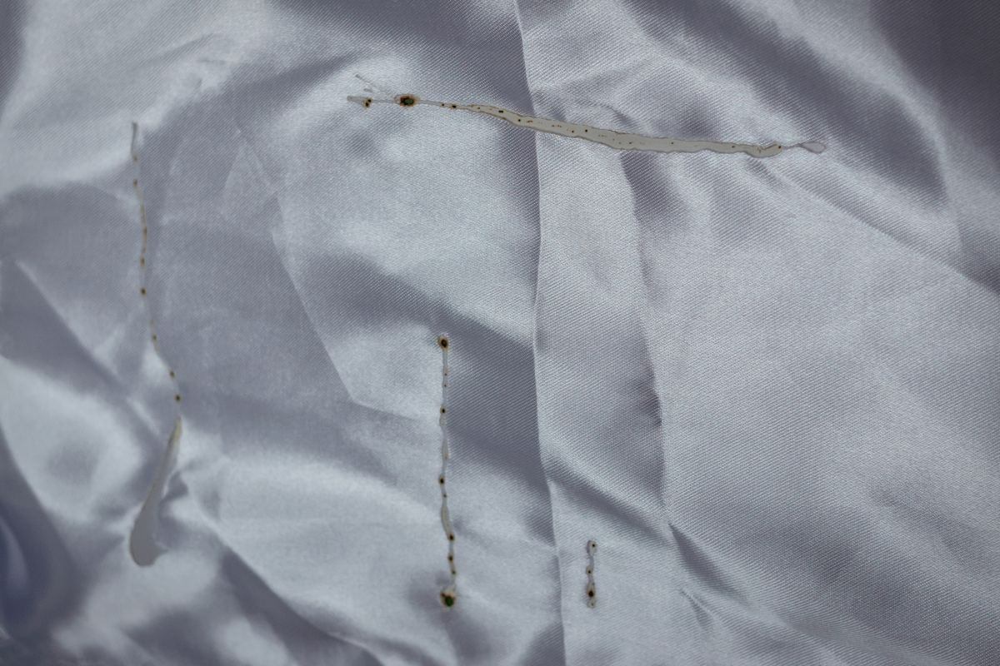
Structure: After the Shift is a photographic series about a state of "after": a surface that has undergone irreversible cuts continues to exist — it holds its form, but without its former, guaranteed wholeness. The shoot is built on light: the same surface is photographed under different lighting — light turns to dark, dark to light, the material seems to switch its mode of existence, and only the marks stay in place. The series does not document a process — it looks closely at what continuation looks like: everything in this surface is temporary and conditional, only the trace is irreversible.
Read more
Structure: After the Shift is a photographic series about a state of "after." Its subject is neither an event nor a process, but what remains once the collision has already taken place: a surface that continues to exist bearing irreversible change.
There are several cuts, differing in shape and scale — not a single catastrophe but a relief of traces: thin lines, intersections, displacements. The surface is not destroyed; it has lost its original wholeness, yet it holds its form — able to go on existing, adapting to new conditions.
The series' method is light. The same surface is photographed under illumination from different angles: light turns to dark, dark to light, the folds change relief, the material seems to switch its mode of existence. Only the cuts remain unchanged — in the same places, the same shape. Everything in this surface turns out to be temporary and conditional, except the trace.
The series does not point to a specific event and does not document a process. It looks closely at an altered structure of reality — where continuity is no longer given, stability is temporary, and continued existence does not undo what has happened.
Undo Error, 2026

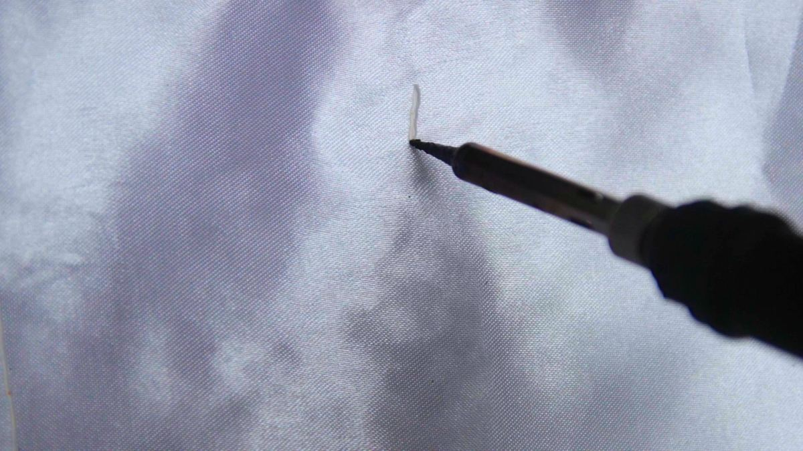
Frames from video. Full video on request — Telegram or email.
The video records the burning of fabric — an irreversible gesture that leaves a mark. After the cut, a generated pseudo-restoration follows: the fabric appears to "return," yet the reconstruction is incomplete — the surface behaves unnaturally, the fabric seems not to remember itself, and the cut does not disappear. The work explores the tension between material irreversibility and the digital logic of "undo."
Read more
The video is built around a simple, irreversible action — burning fabric with a pyrograph. The camera records the process in close-up, without dramatization or editing, as a documentary act: the cut forms gradually, carrying the material's resistance and the passage of time within it. It is performed deliberately — as a chosen act, not an accident.
Once the burn is complete, the image shifts into a mode of pseudo-restoration — a movement resembling reverse playback. But this is not a mechanical rewind; it is a generated sequence: the algorithm reproduces an image of wholeness without restoring the original materiality. The surface behaves unnaturally, micro-mismatches and shifts appear — the fabric seems not to remember itself.
A real cut is irreversible; the digital environment has trained us to expect instant correction — to erase, undo, delete the trace. In material space, such undoing is impossible: what remains is a residue, a scar, a mismatch. The final state of the fabric holds exactly this — without dramatizing or aestheticizing it as trauma, but retaining it as fact.
A machine can reconstruct an image, but not the prior state of the material — and still less the experience bound to the action. The work fixes the moment of divergence between the memory of the body and the memory of the system.
The video holds the viewer between the wish to restore the original and the recognition that return is impossible. The cut here is not destruction but a marker of action; the pseudo-restoration is not a correction but evidence that some traces are not fully removed, even within an environment that promises endless correction.